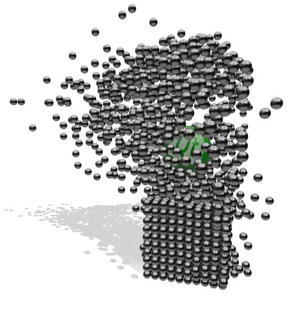

Qt Quick 3D Physics
Qt Quick 3D Physics provides a high-level API for physics simulation. It supports simulating interactive rigid bodies as well as static meshes and non-colliding bodies used for detecting overlaps. Every simulated body can have its own physical properties like mass, density and friction.

Using the Module
QML API
The QML types of the module are available through the QtQuick3D.Physics import. To use the types, add the following import statement to your .qml file:
import QtQuick3D.Physics
This a pure QML module and it does not have a C++ API.
Articles and Guides
Examples
The best way to see what Qt Quick 3D Physics can do is to check out the examples:
Reference
Note: There are API changes compared to the Tech Preview API (Qt version 6.4). See the Qt Quick 3D Physics API Changes from Tech Preview for the difference.
Related Modules
License and Attributions
Qt Quick 3D Physics is available under the commercial license from The Qt Company. In addition, it is available under the GNU General Public License, version 3. See Qt Licensing for further details.
Furthermore Qt Quick 3D Physics contains third party modules under the following permissive licenses:
BSD 3-Clause "New" or "Revised" License |